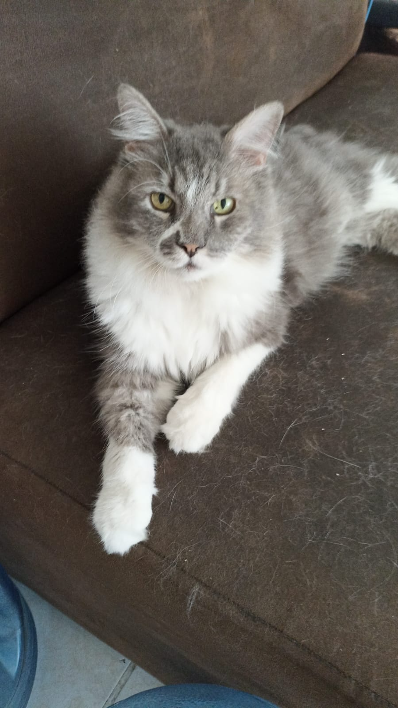

Día de Muertos · JSConf México 2026
Nueve vidas. Infinitas huellas.
Gotty
El gato más chulo de este mundo.
Y de todos los que siguen.
Hay huellitas que se quedan para siempre.
Enciende la vela y deja que brille su recuerdo.
Para el gato cachondo top 1 en el mundo. Gotty, tu pelito gris, tu pechito blanco y toda esa facha dejaron huellitas para siempre en mi corazón. Mi gato chulo, aquí siempre tendrás una luz encendida. Con todo mi cariño, Paul 🧡

01 / Un pequeño ritual para un amor enorme
Una llama. Un recuerdo. Un camino de vuelta.
02 / El álbum de una leyenda
Todo chulo.
Todo Gotty.
Hay fotos que no se miran. Se abrazan.
Toca una para verla de cerquita.
03 / Donde las huellitas se vuelven estrellas
Un cielo entero
para ti.
Deja nueve flores para dibujar su constelación.
Cada pequeño gesto también es una forma de recordar.
0 de 9 estrellas encendidas
Este pequeño ritual se guarda solo en tu navegador.
No se fue la luz.
Se volvió constelación.Para Gotty. Con amor, Paul.